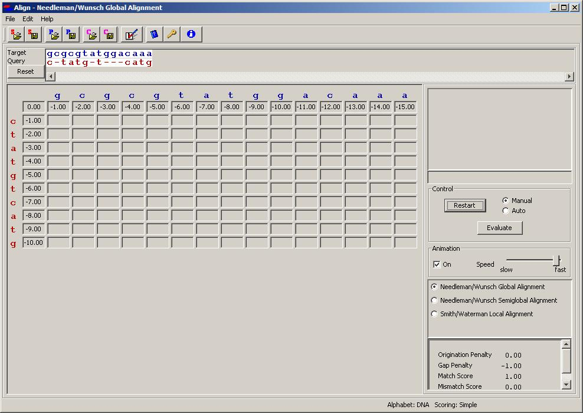
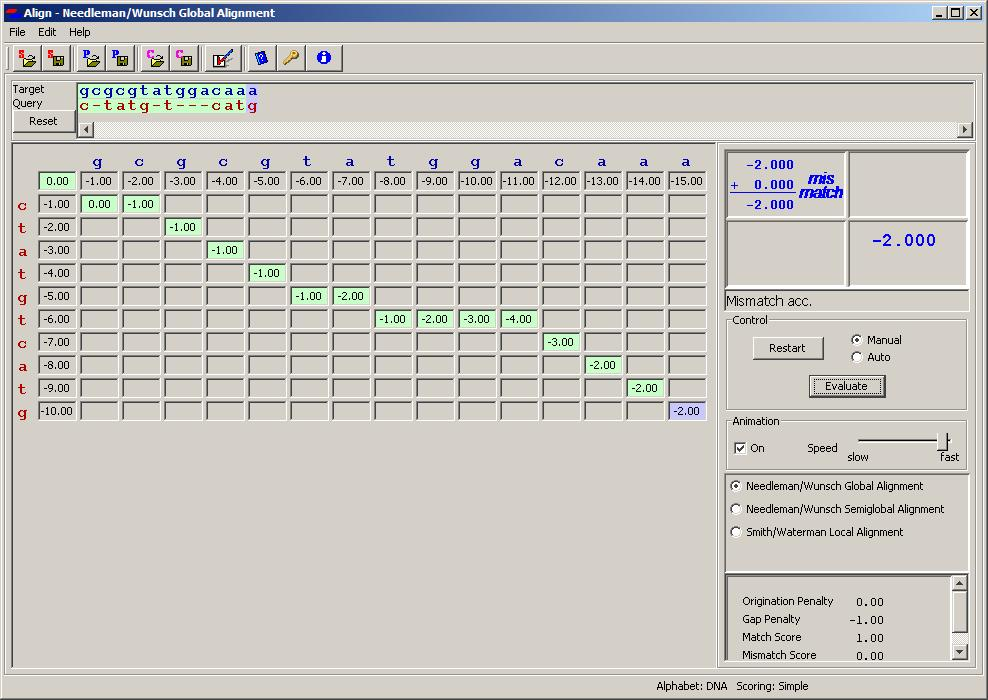
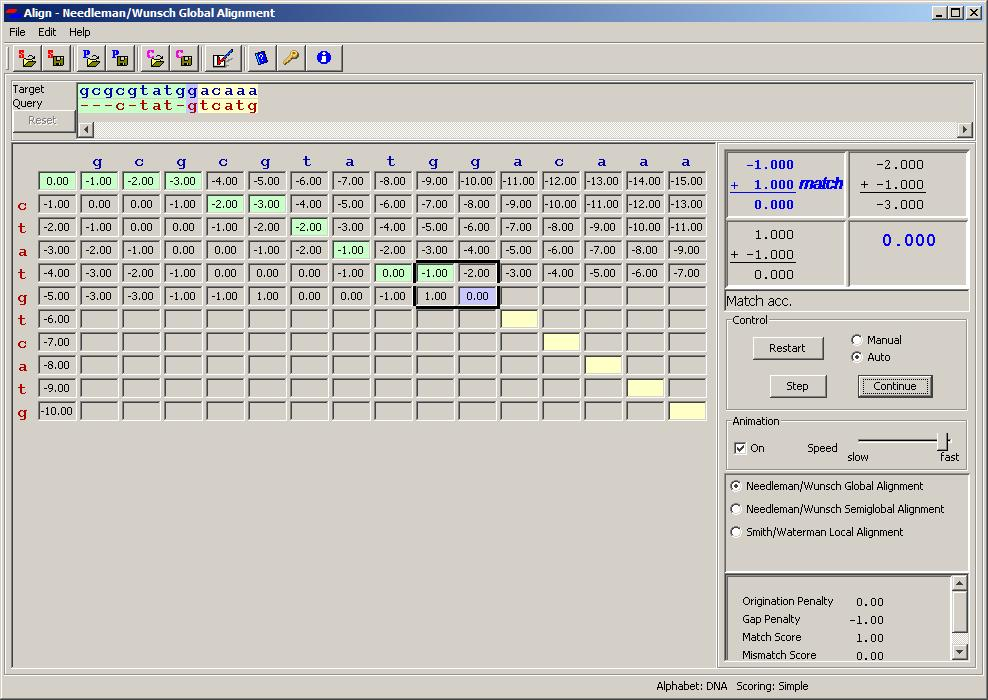

Getting Started
Chapter: Getting Started
 Contents
Contents  Installatio...
Installatio...  Commands...
Commands...
Launching Align for the first time will load a short pair of DNA
sequences, with a simple initial configuration (Match Score: 1.00, Gap
Penaly: -1.00, Mismatch Score and Origination Penaly: 0.00).
Initiating Sequence Alignment Actions
- Select one of the three pairwise sequence alignment algorithms
(Needleman/Wunsch Global Alignment, Needleman/Wunsch Semiglobal
Alignment, Smith/Waterman Local Alignment).
- Click Start in the Control Panel;
- Select Operating Mode (described below);
- Click Evaluate.
Operating Modes
Align has two modes of operation, Manual and Auto, which
respectively challenges the user to try to find the optimal alignment,
and demonstrates fully the selected algorithm and displays it's
solution.
A brief description:
- Manual Mode
- Using the mouse, the user can shift the
sequences and create an alignment which the program will evaluate
using the selected scheme.
- Auto Mode
- The program runs the selected algorithm and shows
the resulting solution. This solution can be compared to the user's
attempt.
Manual Mode
In Manual Mode the user manipulates the sequences to produce an
alignment. Both sequences (source and target) may be manipulated, but
the target should generally be shorter and more amenable to gaps.
Right-click on a sequence letter to move it one space to
the right, introducing a gap in its former slot.
Example: ctatgtcatg → ctat-gtcatg
Left-click on a sequence letter that is to the right of
at least one gap to close the rightmost gap to the left.
Example: c-tat-gtcatg → c-tatgtcatg
|  |
|
 |
| Fig. 1a. Manual alignment |
|
Fig. 1b. After evaluation |
Scoring
When you are satisfied click Evaluate to view
the score your alignment gets in the chosen algorithm. The score
values appear in a path in the matrix at the intersection of aligned
letters (see Fig. 1b). Clicking on a score box allows you to see how
the score value was obtained from the previous value, as prescribed by
the algorithm and configuration settings.
You can try additional alignments by clicking on sequence
elements. You may first want to reset the sequence configuration by
clicking the Reset button.
You may repeat this procedure as often as you like.
Auto Mode
In Auto Mode the program follows the selected algorithm to produce an
alignment. After selecting Auto Mode
- Step
- performs a single step in the algorithm, filling in
one box of the matrix;
- Solve
- completes the algorithm and shows the solution. If the
Animation checkbox is checked, the display shows each step
followed by a pause. The speed of the animation can be controlled by
the Speed slider. An animation can be Paused and either Continued or Restarted.
Any filled box can be clicked to view the logic used to determine the
value assigned to that box.
If the Auto Mode procedure followed a Manual Mode evaluation, the two
results can be compared by clicking the Manual and Auto radio
buttons.
|  |
| Fig. 2. Midway through Auto evaluation |